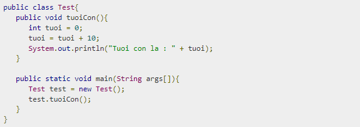
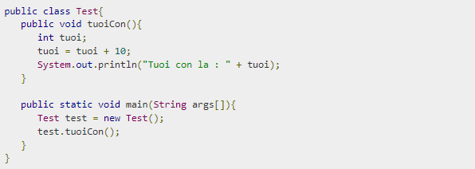
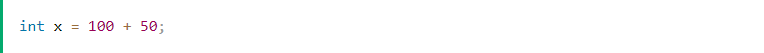
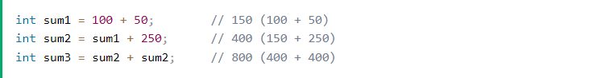
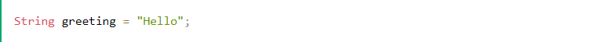
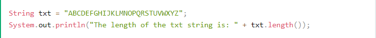

Trang chủ Java
Java HOME
Java Introduce
Java JavaEdit
Java Why
Java Variables
Java Operator
Java String
Java If..Else
Hướng dẫn Java
Java is a popular programming language
Java is used to develop mobile apps, web apps, desktop apps, games and much more.
Java rất dễ học - Bạn sẽ thích nó!
Giới thiệu Java
Java là gì?
Java là ngôn ngữ lập trình máy tính có tính chất hướng đối tượng, dựa trên các lớp, thường được sử dụng cho các hệ thống có tính độc lập cao. Nó được sử dụng để hướng tới các lập trình viên viết ứng dụng "write one, run everywhere" (viết một lần, chạy mọi nơi, nghĩa là đoạn code Java sau khi được biên dịch có thể chạy được trên tất cả các nền tảng hỗ trợ Java mà không cần phải được biên dịch lại. Các ứng dụng Java sau khi đã được biên dịch thành bytecode có thể chạy trên bất kỳ máy ảo Java nào (Java virtual machine)
Java Editors
Là ngôn ngữ bậc cao mà ai cũng có thể dễ dàng học.
Tại sao nên học Java
Java hoạt động trên nhiều nền tảng khác nhau (Windows, Mac, Linux, Raspberry Pi, v.v.)
Đây là một trong những ngôn ngữ lập trình phổ biến nhất trên thế giới
Nó có nhu cầu lớn trong thị trường việc làm hiện tại
Nó rất dễ học và đơn giản để sử dụng
Nó là mã nguồn mở và miễn phí
Nó rất dễ học và đơn giản để sử dụng
Nó có sự hỗ trợ cộng đồng rất lớn (hàng chục triệu nhà phát triển)
Java là ngôn ngữ hướng đối tượng mang lại cấu trúc rõ ràng cho các chương trình và cho phép tái sử dụng mã, giảm chi phí phát triển
Biến trong Java
Biến là tên một khu nhớ. Có ba kiểu biến: biến cục bộ (còn gọi là biến local), thuộc tính (biến của instance- đối tượng) và biến static.
Bạn phải khai báo tất cả các biến trước khi chúng có thể được sử dụng. Form cơ bản của một khai báo biến như sau:
kieu_du_lieu bien [ = giatri][, bien [= giatri] ...] ;
Dưới đây là ví dụ về khai báo và khởi tạo biến hợp lệ trong Java:
int a, b, c;
int a = 5, b = 7;
// Vi du ve khoi tao bien
byte A = 11;
// Khoi tao mot bien kieu byte ten la A.
double pi = 3.14159;
// Khai bao va gan mot gia tri cua PI.
char nam = 'b';
// Bien nam duoc khoi tao voi gia tri 'a'.
Ví dụ
Ở đây, tuoi là biến local. Nó được định nghĩa bên trong phương thức tuoiCon() và phạm vi của nó được giới hạn chỉ trong phương thức này
Ví dụ
Ví dụ sau sử dụng tuoi mà không khởi tạo nó, vì thế nó sẽ tạo một lỗi tại thời gian biên dịch.
Java Operators
Toán tử được sử dụng để thực hiện các thao tác trên các biến và giá trị. Trong ví dụ bên dưới, chúng tôi sử dụng toán tử + để cộng hai giá trị lại với nhau:
Ví dụ
Mặc dù toán tử + thường được sử dụng để cộng hai giá trị lại với nhau, giống như trong ví dụ trên, nó cũng có thể được sử dụng để cộng lại với nhau một biến và một giá trị, hoặc một biến và một biến khác:
Ví dụ
Java chia các toán tử thành các nhóm sau:
- Toán tử số học
- Toán tử gán
- Toán tử so sánh
- Toán tử logic
- Toán tử bitwise
| Toán Tử | Tên | Mô Tả | Ví Dụ |
|---|---|---|---|
| + | Cộng | Cộng hai giá trị lại với nhau | x + y |
| - | Trừ | Trừ một giá trị từ một giá trị khác | x - y |
| * | Nhân | Nhân hai giá trị với nhau | x * y |
| / | Chia | Chia một giá trị cho một giá trị khác | x / y |
| % | Chia Lấy Dư | Trả về phần dư của phép chia | x % y |
| ++ | Tăng | Tăng giá trị của biến lên 1 | ++x |
| -- | Giảm | Giảm giá trị của biến đi 1 | --x |
Java String
Chuỗi được sử dụng để lưu trữ văn bản.
A String biến chứa tập hợp các ký tự
được bao quanh bởi dấu ngoặc kép:
Ví dụ
Chiều dài String
Chuỗi trong Java thực chất là một đối tượng chứa các phương thức có thể thực hiện một số thao tác nhất định trên chuỗi. Ví dụ: có thể tìm thấy độ dài của chuỗi bằng phương thức length() :
Ví dụ
Tìm một ký tự trong một chuỗi
Phương thức indexOf() trả về chỉ mục (vị trí) của lần xuất hiện đầu tiên của một văn bản được chỉ định trong một chuỗi (bao gồm cả khoảng trắng):
Ví dụ
Java If...Else..
Chuỗi được sử dụng để lưu trữ văn bản.
A String biến chứa tập hợp các ký tự
được bao quanh bởi dấu ngoặc kép:
Ví dụ
Chiều dài String
Chuỗi trong Java thực chất là một đối tượng chứa các phương thức có thể thực hiện một số thao tác nhất định trên chuỗi. Ví dụ: có thể tìm thấy độ dài của chuỗi bằng phương thức length() :
Ví dụ
Tìm một ký tự trong một chuỗi
Phương thức indexOf() trả về chỉ mục (vị trí) của lần xuất hiện đầu tiên của một văn bản được chỉ định trong một chuỗi (bao gồm cả khoảng trắng):